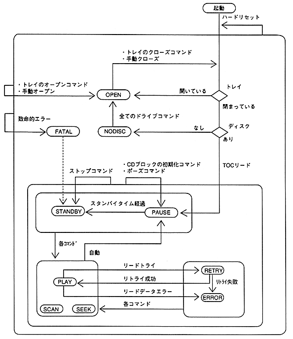

Table 4.3 Error-related status explanation
state | description | internal state |
|---|---|---|
〈RETRY〉 | 〈PLAY〉 if retry is successful, 〈ERROR〉 if it fails. | 〈SEEK〉 |
〈ERROR〉 | The state does not change until the next drive command is issued. | 〈PAUSE〉 |
〈FATAL〉 | Try to return by issuing a stop command. | 〈STANDBY〉 |
”Internal status refers to the status equivalent to the internal operation of the CD block.